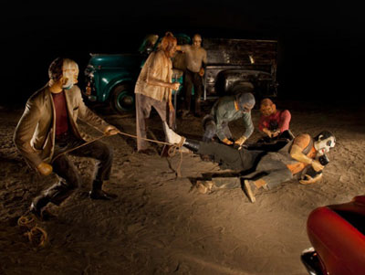
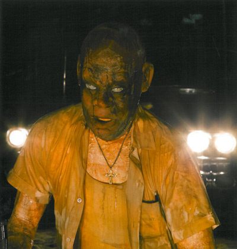

THEORIZING 21C
The Pacific Wall of Kienholz/Lyotard
David Cook
Perhaps it is just what happens when one reaches the West coast of America--the Pacific Wall as Jean-François Lyotard calls it in a rather obscure and obscured text written in the nineteen seventies. Perhaps a similar sensation confronted Hitler when, facing the Atlantic, he is turned back towards the immolation of the ground war. Backs to a wall and the scene turns nasty. Backs to the wall and the catastrophe strikes. This will be played out, as we will see, in the fascism and racism all too well known in the binary twin of Amerika/Europe or, if you prefer, Lyotard/Kienholz.
Lyotard, like many of his French colleagues, went to the coast as a visiting professor. Sitting in the Geisel Library of the San Diego campus, evidently named after Dr. Seuss, one enters the fantasy world of make believe and children's rhymes for Geisel and for Lyotard, as well as rather fanciful stories. In an odd way this is reflected in the library itself, which is unique by being the first library to embrace Google and in having a phantom third floor and with a wall of glass facing the Pacific--the virtual coming to rest in the labyrinth and in the gaze over the Pacific, two themes that occupy Lyotard.
And Lyotard is not alone in his fascination for the view. Take for example, the Canadian artist Alex Colville's haunting work Pacific 1967.[1] Picture the back of a shirtless man looking out of the glass window on to the ocean, a revolver on a table in the foreground. Painted in 1967 this work catches that period of the paroxysms of violence in the US.
Thus, the Geisel library is where the manuscript of the Pacific Wall[2] was purported to be found. Again, the text, claimed to be unedited, was written putatively by a supposed Visiting Associate Professor who in this case may have not been a professor at all but a passerby whose only trace was this text--part of the Deleuzean nomads and the Western line of flight. He then departs back to France. Or, at least, that is how Lyotard tells the story.
Lyotard similarly sends to a friend this shared creation/reflection back across the Atlantic Ocean to the French city of Lorient--perhaps in search of the author or perhaps back to its origins. Nonetheless, the irony is plain in the return to a site of the exhausted European war that will be brought to its end at the Atlantic Wall. Lorient, as its name suggests, is the east swallowed up by the western advance of the armies. L.A. will also be the west that swallows up the Atlantic coast in the march of the American empire.
Especially apt for Lyotard's purpose is Lorient's history as one of the principal sites of the East Indian Company's trade in slaves. Part of the insidious past that reappears in Edward Kienholz's art, as we shall see in a moment. Lorient was also a city that was the home to the German submarine fleet. The so-called Keroman Submarine base held 30 submarines in one of the many bunkers of the Atlantic Wall captured eerily at about the same time as Lyotard's text in Paul Virilio's Bunker Archaeology.[3] As a result, in the Second World War the city was thoroughly bombed by the Allies with more than 500 high explosives and 60,000 incendiary bombs in hopes of dislodging the U boats from that vector that is invisible to the eye below the gaze of the Atlantic/Pacific ocean where resides the substrate of fascism.
So it is the end of the European Empire and the start of American globalism that takes Lyotard himself to the New World, becoming a type of tutor from the glorified past of the Greco/Roman civilization. He brings culture to the American/barbarians who are always at the frontier constantly wishing to attain escape velocity into the next phase of the American Empire.
The Pacific Wall, written at the time of Lyotard's better-known Libidinal Economy,[4] signals his break with the Marxism of his earlier writings. Capital, as we shall see, goes from the relations of production back to signaling the principal Caesarean symbol of empire. No longer Rome the eternal center, but L.A. the decentered fieldscape of the vectors of sun, sea, sky, and desert. The relations of class and class struggle also get shifted to the libidinal band, the screen where drives are invested creating a surface capitalism of desire.
As the European empire is eclipsed by the western expansion, the libidinal drive becomes the pure white epidermal screen that characterizes Lyotard's women--his version of California Girls. So here we have the fantasy of desire in its pure form as the skin of "white women." Back again to the fallen virgin, now no longer Georges Bataille's Dirty[5] but a reconstituted pure, clean racist flesh that will turn all into jealous suitors. In a strange and bizarre fashion Lyotard finds in this jealousy the set up of the Nazi Final Solution. That is a revenge against the Jews for being God's chosen people at the expense of the fragmented and dismembered German nation. Or, at least, Lyotard simultaneously advances this proposition all the while denouncing it, of course, as too superficial, as too much under the sway of "white women's skin." On the libidinal band though what does one have other than surface inviting penetration?
Hence the Lyotard politics, that desire for empire and domination, is set up on the "uninhabitable white surfaces" with three roles as Lyotard says: "pimp, whore, customer."[6] Roles that are being played out, as irony would have it, in a Europe that is now being retooled by the euro. Parasites to be maintained by the Germans generating a series of rape fantasies centered on the castration by the IMF/ECB! Or for those who escaped with their funds intact, emissaries to America who fantasize raping the even bigger empire.
For Lyotard, the message was clear enough in California in the recycling of the fascist/racist mentality--in the destruction, the trashing of everything different, everything minor--the naming in essence, of the trashing operator in its greasy foreignness. All become partial drives; blacks, foreigners, pimps, emperors, presidents, European intellectuals, academics, all expelled to the periphery of the ever-expanding Amerika arriving in L.A. There in L.A. Lyotard learns of the art works of Edward Kienholz.[7] It will be the Kienholz story that forms the center of The Pacific Wall.
Welcome then, to the home of Edward Kienholz, an American sculptor and pioneer of assemblage art. Kienholz is the recycler of trash, foremost of Nazi trash--of the radios that splattered Hitler's message now turned to art and incarcerated (but still speaking/broadcasting) in his 1975 The Cage. Or choose Kienholz the author of the washboards that become Brünhilde (in the recycled Ring) with her Mother's Medal inscribed by Hitler himself. Or choose the combination--radio and washboard--that Kienholz fashions into the New Gothic of 1976 a recycling of Grant Wood's American Gothic composed of the detritus left to the post war immigrant.
Or perhaps he is equally well known as the maker of art money, a preemptive quantitative easing, that is until the IRS stopped him. Or he is reputed as the sculptor of Roxy's, the famous whore house in Nevada that started Kienholz's career, or if you prefer European fare, how about the young women prostitutes of The Hoerengracht of 1987--a draining, guttering out scene.
But it is not to these montages that Lyotard turns. He turns to the art installation Five Car Stud. Originally shown, appropriately enough, in a parking lot in California in 1972, the sculpture was whisked away, having offended the worthies of the museums in L.A. The sculpture resurfaces at the Documenta 5 exhibition in Kessel, Germany. Here it was displayed in a circus tent that Lyotard notes was a type of labyrinth for the viewer. But even this reprise was short lived, as the sculpture will become hidden again as it swept up to the other Orient by a Japanese collector--not given the light of day until forty years after in 2012 when it finally is on display at the Los Angeles County Museum of Art (LACMA).
Edward Kienholz, Five Car Stud, 1969-72. Installation view: "Five Car Stud 1969-1972, Revisited," Los Angeles County Museum of Art, 2011-12
So picture a walk-in sculpture placed in a darkened tent but with five motor vehicles in a circle, headlights on, illuminating a scene of the dismemberment of a black body by a group of KKK like figures. A white woman sits in one of the vehicles throwing up at the scene--a retribution for having a beer with the black man. Indeed, the cars, they circle, on the one hand Wagner like, in warrior ring fashion, and on the other hand like the old cowboy circling the wagons just like in a Western. The montage comes equipped by one of the characters with a rope to hog tie the black victim. All are fixed in the car's headlights--no second thoughts, guns drawn, in a laying down of bets, a showdown from the origins of America. Here, if Lyotard cared to look, is the site of his Just Gaming-- not a site of incommensurable discourse, but of the trashing of the Other--a trashing that is done via the cars who own part of the pan body that is being aggressed.[8]
This is the slaughter site of America that castrates the stranger, the immigrant, above all the black. Lyotard turns to the operating scene in the middle of the collage where the victim's body is lynched around its leg, held down in a crucifix position by two other gamers, guarded by an additional two playing shotgun and finally, in the center, the last figure, operating on the penis of the immobilized N-I-G-G-E-R (the word floating in the oil pan body). Or maybe for the European audience the word becomes JUDE with the KKK figures replaced by SS figures.
Edward Kienholz, Five Car Stud, 1969-72. Installation view: "Five Car Stud 1969-1972, Revisited," Los Angeles County Museum of Art, 2011-12
Here is no black man but a collage centered on an oil pan, yet, of course, it is undoubtedly every black man. Men assembled from car parts creating android, virtual men lubricated with black oil, machinic sites for the medical, surgical strike of racism. Just as for Lyotard there are no white men but every white man in the libidinal scene that attempts to circumscribe the metal black/tige/penis that threatens the sex of white women.
This feeding frenzy is part of America's melting pot that consumes penises, that dismounts the sexual, which creates the fear of rape that occurs everyday. It is the operation of fear, the production of terror as Lyotard says--the terror of racism.
But Lyotard forgets he is in America. He forgets that Kienholz's montage is a poker game played as much by the cars as the KKK figures. The game is with the Cadillac, the pickup truck, the Corvair, the Ford and the Chevy--all of America is there. The event is every bit the creation of the cars of American culture as much as the clown face masks, coming from the Hollywood Magic Shop, worn by the recycled KKK clan members signal the American entertainment industry as accomplice. Or the mask on the black victim rescued from a World War One training kit depicting those exposed to poisonous gas. Capitalism in the old form of the relations of the economy and war has not left the scene.
But it is even more than this with America becoming the foremost site of gambling. This is a Caesars palace with the cars doing the gaming. Or maybe, the gaming is the original five card stud invented by the soldiers in the American Civil War, which lives on in the continued uncivil race warring that characterizes America today.
America is a giant bet on the future, virtual outcomes of aleatory violence. Each day there are millions of little bets, with a million little ecstasies, a million little disassembled penises that play part of the poker game. The West, then, is not only a wall that marks the empire but also Caesars Palace where Baudrillardian last men place their bets.
As a final irony, it may be noted that Kienholz, who passed away in 1994 from a heart attack, was buried in the front seat of a 1940 Packard. Cars were there at the beginning as one of Kienholz's first works was Back Seat Dodge '38, done in 1964. This work was at the time, just like Five Car Stud, deemed by the Los Angeles County Board of Supervisors to be "pornographic" as it depicted two people making out.[9] In the Packard with Kienholz were his dog's ashes, a bottle of wine and naturally--a pack of cards! As for Lyotard, he will end his days in 1998 in a contest with Augustine trying to load the dice in his favor.[10]
Notes
----------------
[1] David Burnett, Colville, Toronto: McClelland and Stewart, 1983, p. 228. See http://www.alexcolville.ca/gallery/alex_colville_1967_pacific/.
[2] Jean-François Lyotard, Pacific Wall, trans. Bruce Boone, Venice, CA.: The Lapis Press, 1990. A portion of the Pacific Wall, focused on Kienholz, is reprinted in the more accessible The Lyotard Reader, ed. Andrew Benjamin, Oxford: Basil Blackwell, 1989, p. 56-68.
[3] Paul Virilio, Bunker Archéologie, Paris: Les Editions du Demi-Cercle, 1991.
[4] Jean-François Lyotard, Libidinal Economy, trans. Iain Hamilton Grant, Bloomington and Indianapolis: Indiana University Press, 1993.
[5] Georges Bataille, Blue of Noon, trans. Harry Mathews, London and N.Y.: Marion Boyars, 1986.
[6] Lyotard, p. 34.
[7] The works of Edward and Nancy Reddin Kienholz can be found at http://shop.lalouver.com/collections/publications/products/kienholz-five-car-stud. For print versions of Five Car Stud, a work completed by Edward before the collaboration with his wife, Nancy. See Kienholz/ Five Car Stud, ed. Michael Juul Holm, Denmark: Louisiana Museum of Modern Art, 2011. A recent video with Nancy Kienholz discussing the history and restoration of Five Card Stud is available at: https://www.youtube.com/watch?v=6PQJpN_LSlo. Other catalogues of the Kienholzs' work are The Hoerengracht, London: National Gallery, 2009. This catalogue also contains photos of Edward Kienholz's earlier work Roxys. Finally, Kienholz Berlin/ Hope, Venice, CA.: L.A. Louver, 2014, which has a number of the artists' works with recycled material of the Nazi period. The catalogue includes Brünhilde amongst other works from The White Easels, and from The Volksempfångers series. For the catalogue and associated images including Brünhilde see
http://www.kcrw.com/news-culture/shows/art-talk/kienholz-berlin-hope-at-la-louver-gallery/at140320b.jpg/image_preview.
For other images such as The Cage and Back Seat Dodge '38 see http://www.lalouver.com/html/exhibition.cfm?tExhibition_id=339.
[8] Jean-François Lyotard and Jean-Loup Thébaud, Just Gaming, trans. Wlad Godzich, Minneapolis: University of Minnesota Press, 1985.
[9] LACMA archives. http://collections.lacma.org/node/424328. When the work finally was displayed the car door remained closed and was opened only by request by individuals eighteen years of age or older.
[10] See Jean-François Lyotard, The Confession of Augustine, trans. Richard Beardsworth, Stanford: Stanford University Press, 2000. This last manuscript was published posthumously and may be read as much as Lyotard's confession as the saint's.
----------------
David Cook teaches at Victoria College and in the Department of Political Science at the University of Toronto.
© CTheory. All Rights Reserved